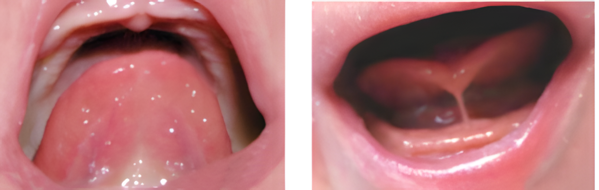

Capítulo 11
Amamentação
Sumário
▼
Capítulo 1
Capítulo 2
Capítulo 3
Capítulo 4
Capítulo 5
Capítulo 6
Capítulo 7
Capítulo 8
Capítulo 10
Capítulo 11
O ACS é importante para o sucesso da amamentação, sendo fonte de informações e orientações. Por isso, através da visita, é crucial identificar as necessidades da mãe e da criança. Pergunte:
11.1 Como está sua experiência com a amamentação até agora, está enfrentando dificuldade?
Questionar quais as dificuldades que ela está enfrentando e orientar o agendamento de consulta com a enfermeira ou o médico da Unidade de Saúde.
Prosseguir com a conversa.
Questionar quais as dificuldades que ela está enfrentando e orientar o agendamento de consulta com a enfermeira ou o médico da Unidade de Saúde.
Prosseguir com a conversa.
11.2 Foi realizado o teste da linguinha no seu filho na maternidade?
Observe no relatório de alta se existe a informação sobre a realização do teste da linguinha. Esse exame é importante pois permite diagnosticar e indicar o tratamento precoce para limitações do movimento da língua, causados pela “língua presa”20.
Encaminhar à Unidade de Saúde para a realização do teste.
Observe no relatório de alta se existe a informação sobre a realização do teste da linguinha. Esse exame é importante pois permite diagnosticar e indicar o tratamento precoce para limitações do movimento da língua, causados pela “língua presa”20.
Encaminhar à Unidade de Saúde para a realização do teste.
Quando a língua está presa, importantes funções são comprometidas, como sugar, engolir, falar e mastigar. Isso compromete diretamente a amamentação e precisa ser corrigido21.
Imagem 10 - Língua sem frênulo e língua com o
frênulo alterado (“língua presa”).

Fonte: Retirada do Protocolo de avaliação do frênulo lingual para bebês20.
11.3 Você está amamentando exclusivamente (apenas o leite materno)?
Parabenizá-la e incentivar com palavras positivas. Orientá-la a continuar amamentando exclusivamente até os 6 meses de vida, e reforçar que o leite materno é um alimento completo, não sendo necessário oferecer água, chás ou sucos para a criança22.
Investigar, anotar o motivo e orientá-la sobre a importância da amamentação exclusiva até os 6 meses de vida. Orientar a mulher a agendar uma consulta com a enfermeira ou o médico da Unidade de Saúde.
Parabenizá-la e incentivar com palavras positivas. Orientá-la a continuar amamentando exclusivamente até os 6 meses de vida, e reforçar que o leite materno é um alimento completo, não sendo necessário oferecer água, chás ou sucos para a criança22.
Investigar, anotar o motivo e orientá-la sobre a importância da amamentação exclusiva até os 6 meses de vida. Orientar a mulher a agendar uma consulta com a enfermeira ou o médico da Unidade de Saúde.
11.4 Você tem conseguido encontrar uma posição confortável para amamentar?
Parabenizá-la e incentivar com palavras positivas.
Orientar que escolha uma posição confortável com o corpo da criança virado para o corpo da mãe, bem apoiado, com o rosto voltado para a mama. A figura abaixo mostra diferentes possibilidades de posições22.

Imagem 11 - Posições para amamentar.
Fonte: Acervo das autoras (2024).
Parabenizá-la e incentivar com palavras positivas.
Orientar que escolha uma posição confortável com o corpo da criança virado para o corpo da mãe, bem apoiado, com o rosto voltado para a mama. A figura abaixo mostra diferentes possibilidades de posições22.
Imagem 11 - Posições para amamentar.
Fonte: Acervo das autoras (2024).
PRINCIPAIS DÚVIDAS DA MÂE
11.5 Você acha que tem pouco leite?
Explicar que, na maioria das vezes, a quantidade de leite produzida é suficiente.
- O choro e a insatisfação da criança nem sempre é pela reduzida quantidade de leite, mas se esse for o caso, instrua a aumentar a frequência das mamadas, corrigir posicionamento e pega, esvaziar bem as mamas, ingerir água em quantidade suficiente (pelo menos 2 litros por dia – 6 a 8 copos) e repousar sempre que possível22.
Se, mesmo após as orientações do ACS, a mãe continuar referindo pouca produção de leite, é necessário avaliação da enfermeira ou do médico da Unidade de Saúde.
Prosseguir com a conversa.
Explicar que, na maioria das vezes, a quantidade de leite produzida é suficiente.
- O choro e a insatisfação da criança nem sempre é pela reduzida quantidade de leite, mas se esse for o caso, instrua a aumentar a frequência das mamadas, corrigir posicionamento e pega, esvaziar bem as mamas, ingerir água em quantidade suficiente (pelo menos 2 litros por dia – 6 a 8 copos) e repousar sempre que possível22.
Se, mesmo após as orientações do ACS, a mãe continuar referindo pouca produção de leite, é necessário avaliação da enfermeira ou do médico da Unidade de Saúde.
Prosseguir com a conversa.
11.6 Você acha que seu filho está mamando pouco?
Explique que a criança precisa mamar várias vezes no decorrer do dia, porque o estômago dela é pequeno e esvazia muito rápido. Por isso, precisa mamar novamente em um curto espaço de tempo23.
Nesse momento, o ACS deve mostrar para a mãe a imagem abaixo, com a capacidade gástrica da criança.
Imagem 12 - Tamanho do estômago da criança
nos primeiros dias de vida.

Fonte: Acervo das autoras (2024).
Prosseguir com a conversa.
Explique que a criança precisa mamar várias vezes no decorrer do dia, porque o estômago dela é pequeno e esvazia muito rápido. Por isso, precisa mamar novamente em um curto espaço de tempo23.
Nesse momento, o ACS deve mostrar para a mãe a imagem abaixo, com a capacidade gástrica da criança.
Imagem 12 - Tamanho do estômago da criança nos primeiros dias de vida.
Fonte: Acervo das autoras (2024).
Prosseguir com a conversa.
11.7 Como saber se a criança está recebendo leite suficiente?
(O ACS deve orientar sobre a importância de analisar a quantidade de urina, coloração e aspecto das fezes.)
No 1° dia é esperado uma fralda de urina, no 2° dia duas fraldas, no 3° dia três fraldas, no 4° dia quatro fraldas, e no 5° dia seis fraldas de urina24.
O primeiro cocô da criança é formado ainda na gestação e é chamado de mecônio. Restos do metabolismo da criança são eliminados, por isso é observado uma coloração escura e textura pegajosa nas primeiras fezes, que devem ser eliminadas nas primeiras 24h após o nascimento. No decorrer dos dias, conforme a criança ingere e digere o leite materno, essa coloração vai mudando de tonalidade até ficar amarelada24.
Imagem 13 - Transicionamento (cor e aspecto) das fezes

Fonte: Acervo das autoras (2024).
11.8 Você acha que seu leite é fraco?
Explique que o leite materno não é fraco, pois é produzido pelo corpo da mãe com todos os componentes ideais para a necessidade da criança. O leite é completo, rico em sais minerais, vitaminas, anticorpos, gordura, de acordo com a necessidade da criança23-25.
Prosseguir com a conversa.
Explique que o leite materno não é fraco, pois é produzido pelo corpo da mãe com todos os componentes ideais para a necessidade da criança. O leite é completo, rico em sais minerais, vitaminas, anticorpos, gordura, de acordo com a necessidade da criança23-25.
Prosseguir com a conversa.
PROBLEMAS NA AMAMENTAÇÃO
11.9 Você está sentindo dor ao amamentar?
Explicar que a dor pode ser um sinal de que há algo de errado com a pega22. Avaliar como a criança está mamando, se há presença de fissuras (rachaduras) ou inchaço nas mamas e orientar a mulher quanto à pega correta, conforme apresentado na imagem abaixo.

Imagem 14 - Pega correta da criança ao mamar.
Fonte: Acervo das autoras (2019).
Descrição da pega: O nariz da criança fica livre, sem encostar no seio da mãe, a criança abocanha uma parte da aréola, a boquinha de peixe indica que os lábios devem estar virados para fora, e o queixo deve encostar no seio materno25.
Descrição da pega: O nariz da criança fica livre, sem encostar no seio da mãe, a criança abocanha uma parte da aréola, a boquinha de peixe indica que os lábios devem estar virados para fora, e o queixo deve encostar no seio materno25.
Prosseguir com a conversa.
Explicar que a dor pode ser um sinal de que há algo de errado com a pega22. Avaliar como a criança está mamando, se há presença de fissuras (rachaduras) ou inchaço nas mamas e orientar a mulher quanto à pega correta, conforme apresentado na imagem abaixo.
Imagem 14 - Pega correta da criança ao mamar.
Fonte: Acervo das autoras (2019).
Descrição da pega: O nariz da criança fica livre, sem encostar no seio da mãe, a criança abocanha uma parte da aréola, a boquinha de peixe indica que os lábios devem estar virados para fora, e o queixo deve encostar no seio materno25.
Descrição da pega: O nariz da criança fica livre, sem encostar no seio da mãe, a criança abocanha uma parte da aréola, a boquinha de peixe indica que os lábios devem estar virados para fora, e o queixo deve encostar no seio materno25.
Prosseguir com a conversa.
11.10 Seu mamilo tem fissuras (rachaduras)?
Avaliar e corrigir a pega da criança. Se a pega estiver correta, encaminhe à Unidade de Saúde para ser examinado pela enfermeira ou pelo médico, pois se a criança estiver com a “língua presa”, isso pode ser a causa da dificuldade com a pega e também das rachaduras na mama26.
Prosseguir com a conversa.
Avaliar e corrigir a pega da criança. Se a pega estiver correta, encaminhe à Unidade de Saúde para ser examinado pela enfermeira ou pelo médico, pois se a criança estiver com a “língua presa”, isso pode ser a causa da dificuldade com a pega e também das rachaduras na mama26.
Prosseguir com a conversa.
11.11 Sente suas mamas pesadas, sensíveis, muito cheias e com dor?
Explicar que ela pode estar com ingurgitamento mamário, popularmente chamado de “mamas empedradas”. Isso pode acontecer quando a mãe produz mais leite do que o necessário25.
-
Toda vez que apresentar as mamas cheias, doloridas e sensíveis, a mulher pode fazer massagem (vídeo 1), ordenha manual (vídeo 2) e compressas frias antes e depois de cada mamada 27.
-
Orientar a retirada de um pouco do leite antes da mamada e massagem reversa (ver vídeo 3) para proporcionar a elasticidade do mamilo.
-
Amamentar de 3 em 3 horas durante o dia, permitindo que a criança mame até largar a mama, alternando os lados de cada mamada. Se houver melhora dos sintomas, continuar amamentando em demanda livre (sempre que a criança quiser) 28.
Se não houver melhora dos sintomas em até 24 horas, a mama ficar avermelhada e ocorrer febre, é necessário avaliação da enfermeira ou do médico da Unidade de Saúde27.
Prosseguir com a conversa.
Explicar que ela pode estar com ingurgitamento mamário, popularmente chamado de “mamas empedradas”. Isso pode acontecer quando a mãe produz mais leite do que o necessário25.
-
Toda vez que apresentar as mamas cheias, doloridas e sensíveis, a mulher pode fazer massagem (vídeo 1), ordenha manual (vídeo 2) e compressas frias antes e depois de cada mamada 27.
-
Orientar a retirada de um pouco do leite antes da mamada e massagem reversa (ver vídeo 3) para proporcionar a elasticidade do mamilo.
-
Amamentar de 3 em 3 horas durante o dia, permitindo que a criança mame até largar a mama, alternando os lados de cada mamada. Se houver melhora dos sintomas, continuar amamentando em demanda livre (sempre que a criança quiser) 28.
Se não houver melhora dos sintomas em até 24 horas, a mama ficar avermelhada e ocorrer febre, é necessário avaliação da enfermeira ou do médico da Unidade de Saúde27.
Prosseguir com a conversa.
Proteger a amamentação é responsabilidade de todos os profissionais da saúde. Por isso, é importante estar sempre atualizado, identificar e reconhecer as necessidades da mãe e do filho, a fim de orientar e incentivar o aleitamento materno.